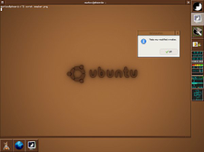
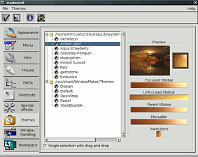
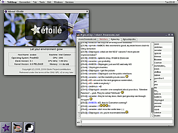

WindowMaker
Ausbaufähige Anleitung
Dieser Anleitung fehlen noch einige Informationen. Wenn Du etwas verbessern kannst, dann editiere den Beitrag, um die Qualität des Wikis noch weiter zu verbessern.
Anmerkung: Da sich das grafische Konfigurationswerkzeug wmakerconf ab Ubuntu 12.04 nicht mehr in den offiziellen Paketquellen befindet, müsste der Abschnitt zur Konfiguration ergänzt werden.
Dieser Artikel wurde für die folgenden Ubuntu-Versionen getestet:
Ubuntu 14.04 Trusty Tahr
Zum Verständnis dieses Artikels sind folgende Seiten hilfreich:
„Der GNU Window Manager
oder kurz WindowMaker ist ein von Alfredo Kojima geschriebener Fenstermanager für das X11-Grafiksystem.
Vom Design her an NextStep angelehnt und als Verbesserung auf FVWM-basierten AfterStep bietet er als Fenstermanager ein funktional-gefälliges Äußeres und umfangreiche Konfigurationsmöglichkeiten - auch bequem per GUI mittels WPrefs.app (Icon mit Schraubenzieher) oder dem unten erwähnten umfangreichen WMakerConf - bei stets geringer RAM- und CPU-Belastung. Darüberhinaus eignet er sich als Desktopmanager für GNUstep, obwohl WindowMaker selbst WINGs ("WINGs is not GNUstep") verwendet.
WindowMaker hat das aus NextStep bekannte Dock für dockbare Applikationen (Dockapps) übernommen. Systrayicons etc. können über die Anwendung Docker oder wmsystray problemlos dargestellt und in die Oberfläche eingebunden werden.
Man kann Dock und Clip auch ganz ausschalten und auf den Desktop lediglich Uhr, Lautstärkeregelung und das Startmenü für Anwendungen (Anwendungsmenü) legen. Dieses Menü kann man vollständig seinen Bedürfnissen anpassen.“
Quelle: Wikipedia)
Installation¶
Wer WindowMaker nutzen möchte, muss nur folgendes Paket installieren [1]:
wmaker (universe)
 mit apturl
mit apturl
Paketliste zum Kopieren:
sudo apt-get install wmaker
sudo aptitude install wmaker
Alternativ steht mit Window Maker Live eine auf Debian basierende Live-CD zur Verfügung.
wmakerconf¶
WMaker ist minimalistischer angelegt als GNOME oder KDE, aber durch eine umfangreiche grafische Konfiguration nicht ganz so anspruchsvoll zu konfigurieren wie etwa Fluxbox. Die grafische Konfigurationen lässt sich in etwa wie das Kontrollzentrum von KDE bedienen (siehe Abbildungen).
Über dieses Werkzeug lässt sich Folgendes einstellen (Auswahl):
Tastaturbelegung
Man kann für nahezu jede Bedienmöglichkeit eine Tastenkombination angeben
Es lassen sich auch Programme auf Tastenkombinationen legen
Aussehen
Maus
Scrollgeschwindigkeit
Aktionen für bestimmte Maustasten
Verhalten von Fenstern
Designauswahl und -erstellung (Themes)
|  |
| WindowMaker |
|  |
| WindowMaker Konfiguration |
|  |
| Etoile |
Im Screenshot links zu sehen sind aTerm und (rechts im Bild) einige DockApps, vergleichbar etwa mit GDesklets oder Screenlets - nur eben im WindowMaker-Stil.
Ausblick¶
Inzwischen ist mit dem Etoile-Projekt ein Projekt gestartet worden, das zum Ziel hat, eine auf GNUstep basierende, vollwertige Desktopumgebung wie GNOME oder KDE zu entwickeln. Wie das bis jetzt aussieht, kann man oben rechts sehen.
Das Projekt befindet sich immer noch in Entwicklung, aber lässt sich bereits gut bedienen.
Links¶
External links
- Verweise auf nützliche Internetseiten
wmakerconf
auf SourceForgeWindowMaker Themes
 - Designs zur Desktop-Gestaltung
- Designs zur Desktop-GestaltungWindow Maker Live
- Live-CD auf Basis von Debian 8
- Erstellt mit Inyoka
-
 2004 – 2017 ubuntuusers.de • Einige Rechte vorbehalten
2004 – 2017 ubuntuusers.de • Einige Rechte vorbehalten
Lizenz • Kontakt • Datenschutz • Impressum • Serverstatus -
Serverhousing gespendet von